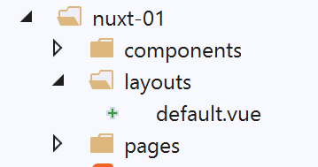
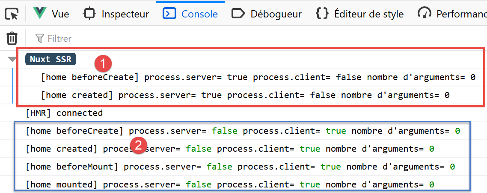
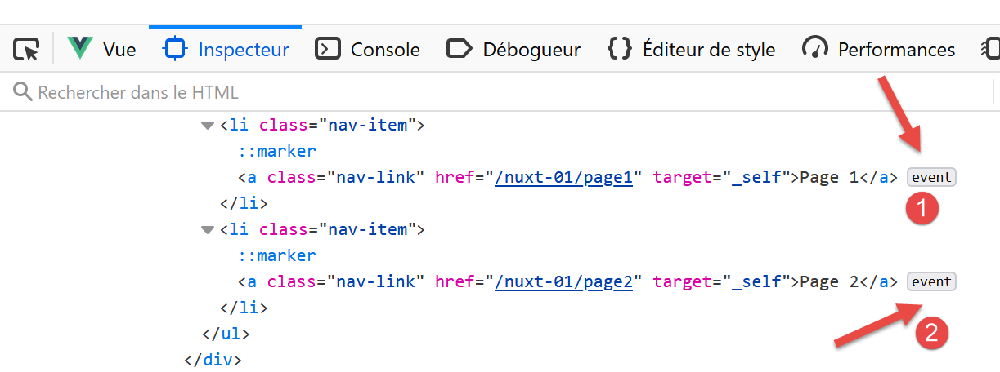

4. Ejemplo [nuxt-01]: enrutamiento y navegación
Vamos a crear una serie de ejemplos sencillos para descubrir poco a poco el funcionamiento de una aplicación [nuxt]. Empezaremos por adaptar la aplicación [vuejs-11] del documento |Introducción al framework VUE.JS con ejemplos|, para descubrir, en primer lugar, en qué se diferencia la organización del código de una aplicación [nuxt] de la de una aplicación [vue].
4.1. Estructura del proyecto
El proyecto [vuejs-11] era un proyecto de navegación entre vistas:

La estructura del código fuente del proyecto [vuejs-11] era la siguiente:

- [main.js] era el script que se ejecutaba al iniciar la aplicación [vue];
- [router.js] establecía las reglas de enrutamiento;
- [App.vue] era la vista estructurante de la aplicación. Se encargaba de organizar el diseño de las diferentes vistas;
- [Component1, Component2, Component3, Layout, Navigation] eran los componentes utilizados en las distintas vistas de la aplicación;
En la migración de la aplicación [vue] [1] a una aplicación [nuxt] [2]:
- los scripts que se ejecutan al iniciar la aplicación deben declararse en la clave [plugins] del archivo [nuxt.config.js]. Además, es posible separar los scripts destinados al servidor [nuxt] de los destinados al cliente [nuxt];
- la vista [App.vue] debe instalarse en la carpeta [layouts] y renombrarse como [default.vue];
- los componentes [Component1, Component2, Component3], que son los destinos del enrutamiento, deben migrarse a la carpeta [pages]. Uno de ellos, el que sirve de página de inicio, debe renombrarse como [index.vue]. En este caso, hemos renombrado los archivos:
- [Component1] --> [index]: muestra el texto [Home];
- [Component2] --> [page1]: muestra el texto [Page 1];
- [Component3] --> [page2]: muestra el texto [Page 2];
[nuxt] utiliza el contenido de la carpeta [pages] para generar dinámicamente las siguientes rutas:
Por lo tanto, el archivo [router.js] utilizado en el proyecto [vue] deja de ser necesario en el proyecto [nuxt].
El archivo de configuración [nuxt.config.js] será el siguiente:
export default {
mode: 'universal',
/*
** Headers of the page
*/
head: {
title: 'Introduction à [nuxt.js]',
meta: [
{ charset: 'utf-8' },
{ name: 'viewport', content: 'width=device-width, initial-scale=1' },
{
hid: 'description',
name: 'description',
content: 'ssr routing loading asyncdata middleware plugins store'
}
],
link: [{ rel: 'icon', type: 'image/x-icon', href: '/favicon.ico' }]
},
/*
** Customize the progress-bar color
*/
loading: { color: '#fff' },
/*
** Global CSS
*/
css: [],
/*
** Plugins to load before mounting the App
*/
plugins: [],
/*
** Nuxt.js dev-modules
*/
buildModules: [
// Doc: https://github.com/nuxt-community/eslint-module
'@nuxtjs/eslint-module'
],
/*
** Nuxt.js modules
*/
modules: [
// Doc: https://bootstrap-vue.js.org
'bootstrap-vue/nuxt',
// Documentación: https://axios.nuxtjs.org/usage
'@nuxtjs/axios'
],
/*
** Axios module configuration
** See https://axios.nuxtjs.org/options
*/
axios: {},
/*
** Build configuration
*/
build: {
/*
** You can extend webpack config here
*/
extend(config, ctx) {}
},
// directorio del código fuente
srcDir: 'nuxt-01',
// enrutador
router: {
// raíz de la aplicación URL
base: '/nuxt-01/'
},
// servidor
server: {
// puerto de servicio, 3000 por defecto
port: 81,
// direcciones de red a las que escucha, por defecto localhost: 127.0.0.1
// 0.0.0.0 = todas las direcciones de red del equipo
host: '0.0.0.0'
}
}
- línea 62: se indica la carpeta que contiene el código fuente del proyecto [dvp];
- línea 66: se indica la raíz de la aplicación [dvp] (se puede poner lo que se quiera);
- línea 43: cabe señalar que la biblioteca [bootstrap-vue] aparece referenciada en la configuración;
4.2. Portabilidad del archivo [main.js]
El archivo [main.js] del proyecto [vuejs-11] era el siguiente:
// importaciones
import Vue from 'vue'
import App from './App.vue'
// plugins
import BootstrapVue from 'bootstrap-vue'
Vue.use(BootstrapVue);
// bootstrap
import 'bootstrap/dist/css/bootstrap.css'
import 'bootstrap-vue/dist/bootstrap-vue.css'
// router
import monRouteur from './router'
// configuración
Vue.config.productionTip = false
// instanciación del proyecto [App]
new Vue({
name: "app",
// vista principal
render: h => h(App),
// enrutador
router: monRouteur,
}).$mount('#app')
Aparte de [imports], el código realiza lo siguiente:
- líneas 5-11: uso de la biblioteca [bootstrap-vue]. Esta tarea la realiza ahora el módulo [bootstrap-vue/nuxt] de la línea 43 del archivo de configuración [nuxt.config.js];
- líneas 14 y 25: uso del archivo de enrutamiento [router.js]. Esta tarea la realiza ahora automáticamente la aplicación [nuxt] a partir del árbol de carpetas de [pages];
- líneas 20-26: instanciación de la vista principal de la aplicación. En una aplicación [nuxt], la vista [layouts/default.vue] es la que actúa como vista principal;
El archivo [main.js] ya no tiene razón de ser. Si la hubiera tenido, se habría declarado en la clave [plugins] de la línea 30 del archivo de configuración [nuxt.config.js];
4.3. La vista principal [default.vue]

La vista principal [layouts / default.vue] es la siguiente:
<template>
<div class="container">
<b-card>
<!-- un mensaje -->
<b-alert show variant="success" align="center">
<h4>[nuxt-01] : routage et navigation</h4>
</b-alert>
<!-- vista actual del enrutamiento -->
<nuxt />
</b-card>
</div>
</template>
<script>
export default {
name: 'App'
}
</script>
- En la línea 9, en el proyecto [vuejs-11], aparecía la etiqueta <router-view /> en lugar de la etiqueta <nuxt /> que se utiliza aquí. Ambas parecen válidas. Las he probado las dos sin observar ningún cambio. Me he quedado con la etiqueta <nuxt />, que es la recomendada. Muestra la vista actual, es decir, la página de destino del enrutamiento actual;
4.4. Los componentes

En comparación con el proyecto [vuejs-11], los componentes [layout, navigation] no cambian:
[components / layout.vue]
<!-- disposición de las vistas -->
<template>
<!-- línea -->
<div>
<b-row>
<!-- zona de dos columnas -->
<b-col v-if="left" cols="2">
<slot name="left" />
</b-col>
<!-- área de diez columnas -->
<b-col v-if="right" cols="10">
<slot name="right" />
</b-col>
</b-row>
</div>
</template>
<script>
export default {
// parámetros
props: {
left: {
type: Boolean
},
right: {
type: Boolean
}
}
}
</script>
Este componente sirve para estructurar las páginas de la aplicación en dos columnas:
- líneas 7-9: la columna de la izquierda con 2 columnas de Bootstrap;
- líneas 11-13: la columna de la derecha, de 10 columnas de Bootstrap;
[navigation.vue]
<template>
<!-- menú Bootstrap de tres opciones -->
<b-nav vertical>
<b-nav-item to="/" exact exact-active-class="active">
Home
</b-nav-item>
<b-nav-item to="/page1" exact exact-active-class="active">
Page 1
</b-nav-item>
<b-nav-item to="/page2" exact exact-active-class="active">
Page 2
</b-nav-item>
</b-nav>
</template>
Este componente muestra tres enlaces de navegación:

Para saber qué valor asignar a los atributos [to] de las líneas 4, 7 y 10, hay que consultar la carpeta [pages] [2]:
- la página [index] tendrá el URL [/];
- la página [page1] tendrá las páginas URL y [/page1];
- la página [page2] tendrá las páginas URL y [/page2];
El componente [navigation] también se puede escribir de la siguiente manera:
<template>
<!-- menú Bootstrap de tres opciones -->
<b-nav vertical>
<nuxt-link to="/" exact exact-active-class="active">
Home
</nuxt-link>
<nuxt-link to="/page1" exact exact-active-class="active">
Page 1
</nuxt-link>
<nuxt-link to="/page2" exact exact-active-class="active">
Page 2
</nuxt-link>
</b-nav>
</template>
La etiqueta <b-nav-item> se sustituye por la etiqueta <nuxt-link>, que designa un enlace de enrutamiento. Al ejecutarlo, no he observado grandes diferencias, nada que pueda inclinar la balanza hacia una etiqueta en lugar de otra.
4.5. Las páginas

La página [index.vue] muestra la siguiente vista:

El código de la página es el siguiente:
<!-- página principal -->
<template>
<Layout :left="true" :right="true">
<!-- navegación -->
<Navigation slot="left" />
<!-- mensaje-->
<b-alert slot="right" show variant="warning">
Home
</b-alert>
</Layout>
</template>
<script>
/* eslint-disable no-undef */
/* eslint-disable no-console */
/* eslint-disable nuxt/no-env-in-hooks */
import Navigation from '@/components/navigation'
import Layout from '@/components/layout'
export default {
name: 'Home',
// componentes utilizados
components: {
Layout,
Navigation
},
// ciclo de vida
beforeCreate(...args) {
console.log('[home beforeCreate]', 'process.server=', process.server,
'process.client=', process.client, «número de argumentos=», args.length)
},
created(...args) {
console.log('[home created]', 'process.server=', process.server,
'process.client=', process.client, «número de argumentos=», args.length)
},
beforeMount(...args) {
console.log('[home beforeMount]', 'process.server=', process.server,
'process.client=', process.client, «número de argumentos=», args.length)
},
mounted(...args) {
console.log('[home mounted]', 'process.server=', process.server,
'process.client=', process.client, «número de argumentos=», args.length)
}
}
</script>
- línea 5: el componente de navegación se coloca en la columna de la izquierda;
- líneas 7-9: se coloca una alerta en la columna de la derecha;
En la sección <script>, insertamos código en las funciones del ciclo de vida de la página [beforeCreate, created, beforeMount, beforeMounted]. Queremos saber cuáles se ejecutan en el servidor []nuxt y cuáles en el cliente [nuxt]. Recordemos dos cosas:
- cuando se solicita una página, ya sea al iniciar la aplicación, como ocurre con la página [index], o bien manualmente por el usuario que actualiza la página en el navegador o escribe una URL a mano, esta es servida en primer lugar por el servidor [nuxt]. Este interpreta el código anterior y ejecuta el JavaScript que contiene;
- cuando la página enviada por el servidor [nuxt] llega al navegador, lo hace con el código del cliente [nuxt]. Este vuelve a interpretar la página anterior;
- mediante los registros, queremos saber quién hace qué para comprender mejor este proceso;
- líneas 30-31: en la función se utiliza un objeto global [process] que existe tanto en el servidor como en el cliente:
- [process.server] es verdadero si el código lo ejecuta el servidor; falso en caso contrario;
- [process.client] es verdadero si el código lo ejecuta el cliente, falso en caso contrario;
- dado que la variable [process] no está declarada en el código, nos vemos obligados a incluir la línea 14 para [eslint]. La línea [16] es necesaria porque, de lo contrario, [eslint] declara otro tipo de error debido a la variable [process]. ¿Es necesaria la línea 15 para permitir el uso de [console] en las funciones del ciclo de vida?
- línea 29: también queremos saber si las funciones del ciclo de vida reciben argumentos. De hecho, descubriremos que [nuxt] transmite información a ciertas funciones. Queremos saber si las funciones del ciclo de vida se encuentran entre ellas;
- Repetimos el mismo código para las cuatro funciones;
4.6. El archivo [nuxt.config.js]
Es este el que controla la ejecución del proyecto [dvp]. Se ha descrito en la página 33.
4.7. Ejecución del proyecto
Ejecutamos el proyecto:

La página que se muestra es la siguiente:

Una vez instalada en el navegador, la aplicación [nuxt] se convierte en una aplicación [vue] clásica. Por lo tanto, no comentaremos el funcionamiento del cliente de la aplicación [nuxt-01]. Esto ya se ha hecho en el proyecto [vuejs-11] del documento |Introducción al marco VUE.JS con un ejemplo|.
La aplicación [nuxt] solo difiere de la aplicación [vue] en dos momentos:
- el inicio inicial de la aplicación, que muestra la página de inicio;
- cada vez que el usuario provoca, de una forma u otra, la actualización del navegador;
En ambos casos:
- el servidor proporciona la página solicitada;
- la página recibida es procesada por el cliente;
Echemos un vistazo a los registros del inicio de la aplicación (F12 en el navegador):

- en [1], los registros del servidor (process.server=true). Aparecen precedidos de la mención [Nuxt SSR] (SSR= Server Side Rendered);
- en [2], los registros del cliente en el navegador (process.client=true);
A partir de estos registros, se puede deducir que:
- el servidor ejecuta las funciones [beforeCreate, created] del ciclo de vida;
- el cliente ejecuta las funciones [beforeCreate, created, beforeMount, mounted] del ciclo de vida;
- el servidor ha procesado la página antes que el cliente;
- En ambos casos, ninguna de las funciones ejecutadas recibe argumentos;
Ahora veamos el código fuente de la página recibida (opción [Code source de la page] en el navegador):
<!doctype html>
<html data-n-head-ssr>
<head>
<title>Introduction à [nuxt.js]</title>
<meta data-n-head="ssr" charset="utf-8">
<meta data-n-head="ssr" name="viewport" content="width=device-width, initial-scale=1">
<meta data-n-head="ssr" data-hid="description" name="description" content="ssr routing loading asyncdata middleware plugins store">
<link data-n-head="ssr" rel="icon" type="image/x-icon" href="/favicon.ico">
<base href="/nuxt-01/">
....
<link rel="preload" href="/nuxt-01/_nuxt/runtime.js" as="script">
<link rel="preload" href="/nuxt-01/_nuxt/commons.app.js" as="script">
<link rel="preload" href="/nuxt-01/_nuxt/vendors.app.js" as="script">
<link rel="preload" href="/nuxt-01/_nuxt/app.js" as="script">
</head>
<body>
<div data-server-rendered="true" id="__nuxt">
<div id="__layout">
<div class="container">
<div class="card">
<div class="card-body">
<div role="alert" aria-live="polite" aria-atomic="true" align="center" class="alert alert-success">
<h4>[nuxt-01] : routage et navigation</h4>
</div>
<div>
<div class="row">
<div class="col-2">
<ul class="nav flex-column">
<li class="nav-item">
<a href="/nuxt-01/" target="_self" class="nav-link active nuxt-link-active">
Home
</a>
</li>
<li class="nav-item">
<a href="/nuxt-01/page1" target="_self" class="nav-link">
Page 1
</a>
</li>
<li class="nav-item">
<a href="/nuxt-01/page2" target="_self" class="nav-link">
Page 2
</a>
</li>
</ul>
</div> <div class="col-10">
<div role="alert" aria-live="polite" aria-atomic="true" class="alert alert-warning">
Home
</div>
</div>
</div>
</div>
</div>
</div>
</div>
</div>
</div>
<script>
window.__NUXT__ = (function (a, b, c, d, e, f, g, h, i, j) {
return {
layout: "default", data: [{}], error: null, serverRendered: true,
logs: [
{ date: new Date(1574069600078), args: [a, b, c, d, e, f, g, "(repeated 1 times)"], type: h, level: i, tag: j },
{ date: new Date(1574070938091), args: [a, b, c, d, e, f, g], type: h, level: i, tag: j }
]
}
}("[home beforeCreate]", "process.server=", "true", "process.client=", "false", "nombre d'arguments=", "0", "log", 2, ""));
</script>
<script src="/nuxt-01/_nuxt/runtime.js" defer></script>
<script src="/nuxt-01/_nuxt/commons.app.js" defer></script>
<script src="/nuxt-01/_nuxt/vendors.app.js" defer></script>
<script src="/nuxt-01/_nuxt/app.js" defer></script>
</body>
</html>
Comentarios
- Lo primero que se puede observar es que el código HTML recibido refleja correctamente lo que ve el usuario. Este no era el caso de las aplicaciones [vue], en las que el código fuente mostrado era el de un archivo HTML prácticamente vacío. Eso era lo que había recibido el navegador. A continuación, el cliente [vue] tomaba el control y generaba la página que esperaba el usuario. Entonces había que ir a la pestaña [inspecteur] de las herramientas de desarrollo del navegador (F12) para descubrir el código HTML de la página mostrada;
- líneas 57-67: este es el script que mostró los registros etiquetados como [Nuxt SSR]. Estos registros se generaron en el lado del servidor y los resultados se incorporaron a un script incluido en la página enviada;
- líneas 68-71: los scripts que conforman el cliente ejecutado en el navegador;
Los scripts de las líneas 68-71 se ejecutan y transforman la página recibida. Para saber qué página se muestra finalmente al usuario, hay que ir a la pestaña [inspecteur] de las herramientas de desarrollo del navegador (F12):

Al expandir la etiqueta <html> [3], se obtiene el siguiente contenido:
<head>
<title>Introduction à [nuxt.js]</title>
<meta data-n-head="ssr" charset="utf-8">
<meta data-n-head="ssr" name="viewport" content="width=device-width, initial-scale=1">
<meta data-n-head="ssr" data-hid="description" name="description" content="ssr routing loading asyncdata middleware plugins store">
<link data-n-head="ssr" rel="icon" type="image/x-icon" href="/favicon.ico">
<base href="/nuxt-01/">
...
<link rel="preload" href="/nuxt-01/_nuxt/runtime.js" as="script">
<link rel="preload" href="/nuxt-01/_nuxt/commons.app.js" as="script">
<link rel="preload" href="/nuxt-01/_nuxt/vendors.app.js" as="script">
<link rel="preload" href="/nuxt-01/_nuxt/app.js" as="script">
<script charset="utf-8" src="/nuxt-01/_nuxt/pages_index.js"></script>
<script charset="utf-8" src="/nuxt-01/_nuxt/pages_page1.js"></script>
<script charset="utf-8" src="/nuxt-01/_nuxt/pages_page2.js"></script>
</head>
<body>
<div id="__nuxt">
<div id="__layout">
<div class="container">
<div class="card">
<div class="card-body">
<div role="alert" aria-live="polite" aria-atomic="true" class="alert alert-success" align="center">
<h4>[nuxt-01] : routage et navigation</h4>
</div>
<div>
<div class="row">
<div class="col-2">
<ul class="nav flex-column">
<li class="nav-item">
<a href="/nuxt-01/" target="_self" class="nav-link active nuxt-link-active">
Home
</a>
</li>
<li class="nav-item">
<a href="/nuxt-01/page1" target="_self" class="nav-link">
Page 1
</a>
</li>
<li class="nav-item">
<a href="/nuxt-01/page2" target="_self" class="nav-link">
Page 2
</a>
</li>
</ul>
</div>
<div class="col-10">
<div role="alert" aria-live="polite" aria-atomic="true" class="alert alert-warning">
Home
</div>
</div>
</div>
</div>
</div>
</div>
</div>
</div>
</div>
<script>
window.__NUXT__ = (function (a, b, c, d, e, f, g, h, i) {
return {
layout: "default", data: [{}], error: null, serverRendered: true,
logs: [
{ date: new Date(1574068674481), args: ["[home beforeCreate]", a, b, c, d, e, f], type: g, level: h, tag: i },
{ date: new Date(1574068674482), args: ["[home created]", a, b, c, d, e, f], type: g, level: h, tag: i }
]
}
}("process.server=", "true", "process.client=", "false", "nombre d'arguments=", "0", "log", 2, ""));
</script>
<script src="/nuxt-01/_nuxt/runtime.js" defer=""></script>
<script src="/nuxt-01/_nuxt/commons.app.js" defer=""></script>
<script src="/nuxt-01/_nuxt/vendors.app.js" defer=""></script>
<script src="/nuxt-01/_nuxt/app.js" defer=""></script>
<iframe id="mc-sidebar-container" ...></iframe>
<iframe id="mc-topbar-container"...> </iframe>
<iframe id="mc-toast-container" ...></iframe>
<iframe id="mc-download-overlay-container"...></iframe>
</body>
Comentarios
- A primera vista, la página mostrada en las líneas 19-59 parece ser la misma que la página recibida;
- líneas 14-16: aparecen tres nuevos scripts, uno para cada una de las páginas de la aplicación;
- líneas 76-79: aparecen cuatro [iframe];
En las líneas 33, 37 y 42, los enlaces plantean un problema. Parecen enlaces normales que, al hacer clic en ellos, envían una solicitud al servidor. Sin embargo, al ejecutarlos, se observa que no es así: no se envía ninguna solicitud al servidor. Para entender por qué, hay que volver a la pestaña [inspecteur] del navegador:

Se observa que, en [1, 2], se han asociado eventos a los enlaces. Son los scripts de las líneas 71-74 los que han asociado los controladores de eventos a los enlaces. Por lo tanto:
- la página que ve el cliente es visualmente idéntica a la enviada por el servidor;
- el cliente ha añadido un comportamiento dinámico a la página;
Ahora solicitemos la página [page1] escribiendo manualmente URL en lugar de [http://192.168.1.128:81/nuxt-01/page1]. Los registros quedan así:

Se obtienen los mismos resultados que para la página [index], pero para [page1]. El código fuente de la página recibida es el siguiente:
<body>
<div data-server-rendered="true" id="__nuxt">
<div id="__layout">
<div class="container">
<div class="card">
<div class="card-body">
<div role="alert" aria-live="polite" aria-atomic="true" align="center" class="alert alert-success"><h4>[nuxt-01] : routage et navigation</h4></div> <div>
<div class="row">
<div class="col-2">
<ul class="nav flex-column">
<li class="nav-item">
<a href="/nuxt-01/" target="_self" class="nav-link">
Home
</a>
</li>
<li class="nav-item">
<a href="/nuxt-01/page1" target="_self" class="nav-link active nuxt-link-active">
Page 1
</a>
</li>
<li class="nav-item">
<a href="/nuxt-01/page2" target="_self" class="nav-link">
Page 2
</a>
</li>
</ul>
</div> <div class="col-10">
<div role="alert" aria-live="polite" aria-atomic="true" class="alert alert-primary">
Page 1
</div>
</div>
</div>
</div>
</div>
</div>
</div>
</div>
</div>
<script>window.__NUXT__ = { layout: "default", data: [{}], error: null, serverRendered: true, logs: [{ date: new Date(1573917721122), args: ["[page1 beforeCreate]", "process.server=", "true", "process.client=", "false", "nombre d'arguments=", "0"], type: "log", level: 2, tag: "" }] };</script>
<script src="/nuxt-01/_nuxt/runtime.js" defer></script>
<script src="/nuxt-01/_nuxt/commons.app.js" defer></script>
<script src="/nuxt-01/_nuxt/vendors.app.js" defer></script>
<script src="/nuxt-01/_nuxt/app.js" defer></script>
</body>
Se obtiene el mismo tipo de página que la página [index], pero con la alerta de la vista [Page 1] (línea 30). Líneas 41-44: el código del cliente se ha devuelto junto con la página. En definitiva, solicitar manualmente una URL equivale a reiniciar la aplicación. Simplemente, la página que se muestra no es necesariamente la página de inicio, sino la que se ha solicitado. Una vez recibida la página, es el cliente quien toma el control. El servidor ya no recibirá más solicitudes a menos que el usuario decida lo contrario.